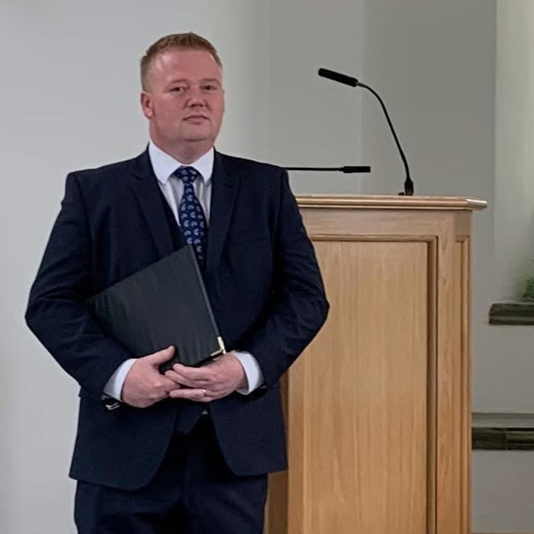
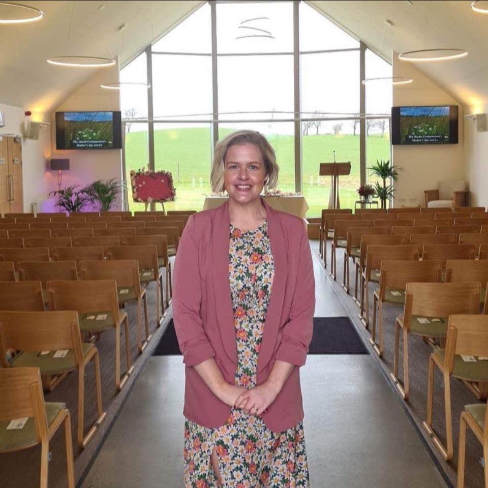

HARVEY CELEBRANTS
Your story.
Your people.
Your ceremony.
Personal ceremonies, written around the people and stories that matter most.
PEOPLE • STORIES • CEREMONIES
Words that sound like you.
No two people are the same, so no two ceremonies should ever feel the same either.
We create warm, authentic and completely personal ceremonies — with heart, humour and the stories that make somebody who they are.
CELEBRATING A LIFE
Funeral
Ceremonies
A funeral should be about far more than saying goodbye. It should tell the story of a life.
We take time to listen — to the memories, characters, relationships, funny moments and little details that made your person uniquely them.
From those conversations we create a ceremony that is personal, heartfelt and clearly delivered — celebrating a life rather than simply marking a loss.
Talk to us →
YOUR DAY. YOUR WAY.
Wedding
Ceremonies
Your wedding ceremony should sound like the two people standing at the front — not like everybody else's wedding.
Whether you want something romantic, relaxed, funny, traditional or completely different, we'll create a ceremony around your story and your personalities.
Meaningful where it matters, relaxed where it should be, and unmistakably yours.
Talk to us →
ABOUT US
Dougie &
Vickie Harvey
Ceremonies aren't about us.
They're about you.
Harvey Celebrants is built around one simple belief: every story matters.
We work with families and couples across Scotland, creating ceremonies that genuinely reflect the people at the heart of them.
KIND WORDS
“Thank you for making the hardest day that little bit easier. You captured him perfectly — the stories, the humour and, most importantly, the person we knew and loved.”
— Family feedback
THE HARVEY APPROACH
Not a template.
Not a performance.
Your story.
We listen first. Then we write.
The result is a ceremony with warmth, personality, meaning and the occasional laugh exactly where it belongs.
QUESTIONS
Frequently asked
Where do you conduct ceremonies?
We work across Scotland in crematoriums, burial grounds, hotels, wedding venues and other locations chosen by families and couples.
Will our ceremony be personal?
Absolutely. We spend time getting to know the people and stories behind the ceremony. Nothing is simply copied from a standard script.
Can a funeral include humour?
Yes. When it reflects the person being remembered, laughter can belong in a funeral just as naturally as tears do.
How do we enquire?
Use the enquiry section below. Tell us a little about the ceremony and we'll get back to you.
GET IN TOUCH
Let's talk about
your ceremony.
Whether you're arranging a funeral, planning a wedding, or simply want to ask a question, we'd be happy to hear from you.
Email Harvey Celebrants